Statique, assemblage et analyse modale — poutres d’Euler–Bernoulli
ISAE-SUPAERO, 1re année
\(\newcommand{\bm}[1]{\boldsymbol{#1}}\newcommand{\odv}[2]{\frac{\mathrm d #1}{\mathrm d #2}}\newcommand{\odvn}[3]{\frac{\mathrm d^{#1} #2}{\mathrm d #3^{#1}}}\newcommand{\pdv}[2]{\frac{\partial #1}{\partial #2}}\newcommand{\pdvn}[3]{\frac{\partial^{#1} #2}{\partial #3^{#1}}}\newcommand{\d}{\mathrm d}\)
Astuces : F plein écran · O vue d’ensemble · M menu · E export PDF · B tableau noir. Les encadrés Simulation sont interactifs : manipulez les curseurs.
Milieu continu. La mécanique des milieux continus (MMC) est le fondement de la mécanique des solides, mais sa résolution (analytique ou numérique) est souvent trop complexe.
Mécanique des structures. Des simplifications sur la géométrie et les chargements s’appliquent aux solides dont au moins une dimension est très petite devant les autres.
Aujourd’hui : poutres d’Euler–Bernoulli, puis leur discrétisation par éléments finis, en statique et en dynamique.
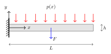
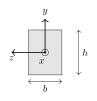
Pour un matériau quelconque, traction et flexion sont couplées. Si le matériau est isotrope, on peut découpler le comportement en traction (le long de l’axe) du comportement en flexion : on traite ici la flexion.
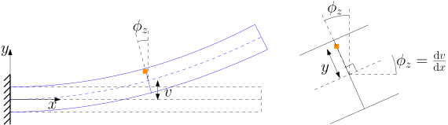
\[ \bm u=\begin{pmatrix}-y\sin\phi_z\\ v-y(1-\cos\phi_z)\end{pmatrix} \;\overset{\text{petits angles}}{\approx}\; \begin{pmatrix}-y\,\phi_z\\ v\end{pmatrix} \;\overset{\text{Kirchhoff}}{=}\; \begin{pmatrix}-y\,\odv{v}{x}\\ v\end{pmatrix} \]
Les sections restent planes et perpendiculaires à la tangente. Passez en « petits angles » : l’écart avec la rotation exacte est du second ordre en \(\phi\).
Tenseur des déformations \(\bm\varepsilon=\tfrac12\bigl(\nabla\bm u+(\nabla\bm u)^\top\bigr)\) avec \(\bm u=(-y\,v',\ v)^\top\) :
\[ \begin{aligned} \varepsilon_{xx}&=\pdv{u_x}{x}=-y\,\odvn{2}{v}{x},\\ \varepsilon_{yy}&=\pdv{u_y}{y}=0,\\ \varepsilon_{xy}&=\tfrac12\Bigl(\pdv{u_y}{x}+\pdv{u_x}{y}\Bigr)=\tfrac12\bigl(v'-\phi_z\bigr)\overset{\text{Kirchhoff}}{=}0. \end{aligned} \]
Loi de Hooke uniaxiale : \[\sigma_{xx}=E\,\varepsilon_{xx}=-E\,y\,\odvn{2}{v}{x}\]
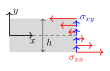
\[ \begin{aligned} T(x)&=\int_S\sigma_{xy}\,\d S &&\text{effort tranchant}\\ M(x)&=-\int_S y\,\sigma_{xx}\,\d S &&\text{moment de flexion} \end{aligned} \]
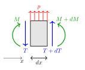
Équilibre en translation verticale : \[T+\d T+p\,\d x=T\ \Longrightarrow\ \odv{T}{x}=-p\]
Équilibre en rotation : \[M+\d M+T\,\d x=M+\frac{p\,(\d x)^2}{2}\]
En négligeant les termes d’ordre deux : \(T=-\odv{M}{x}\).
\[\odvn{2}{M}{x}=EI\,\odvn{4}{v}{x}=p\]
Quatre conditions aux limites sont nécessaires pour résoudre \(EI\,v''''=p\) :
Cinématiques (Dirichlet) \[ \begin{aligned} v&=\widehat v &&\text{sur }\Gamma_v\\ v'&=\widehat\phi &&\text{sur }\Gamma_\phi \end{aligned} \]
Dynamiques (Neumann) \[ \begin{aligned} -EI\,v'''&=\widehat T &&\text{sur }\Gamma_T\\ EI\,v''&=\widehat M &&\text{sur }\Gamma_M \end{aligned} \]
On ne peut pas imposer simultanément :
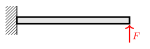
Poutre encastrée–libre \[ \begin{aligned} v(0)&=0, & v'(0)&=0,\\ EI\,v''(L)&=0, & -EI\,v'''(L)&=F. \end{aligned} \]
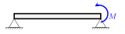
Poutre simplement appuyée \[ \begin{aligned} v(0)&=0, & EI\,v''(0)&=0,\\ v(L)&=0, & EI\,v''(L)&=M. \end{aligned} \]
Le problème homogène \(EI\,v''''=0\) a pour solutions les polynômes cubiques :
\[v(x)=a_0+a_1x+a_2x^2+a_3x^3=\begin{bmatrix}1&x&x^2&x^3\end{bmatrix}\begin{pmatrix}a_0\\a_1\\a_2\\a_3\end{pmatrix}\]
Quatre coefficients \(\leftrightarrow\) quatre conditions aux limites : on prendra deux nœuds, avec pour chacun un déplacement et une rotation.
On multiplie \(EI\,v''''=p\) par une variation arbitraire \(\delta v\) et on intègre deux fois par parties :
\[ \int_0^L EI\,\delta v''\,v''\,\d x=-\Bigl[\delta v\,EI\,v'''\Bigr]_0^L+\Bigl[\delta v'\,EI\,v''\Bigr]_0^L+\int_0^L\delta v\,p\,\d x \]
Traitement des conditions aux limites
Avec \(v|_{\Gamma_v}=0\), \(v'|_{\Gamma_\phi}=0\), \(EI\,v''|_{\Gamma_M}=\widehat M\) et \(-EI\,v'''|_{\Gamma_T}=\widehat T\) :
Trouver \(v\) avec \(v|_{\Gamma_v}=0,\ v'|_{\Gamma_\phi}=0\) tel que, pour tout \(\delta v\) vérifiant les mêmes conditions, \[ \underbrace{\int_0^L EI\,\delta v''\,v''\,\d x}_{\text{travail virtuel interne}}= \underbrace{\delta v\,\widehat T\Big|_{\Gamma_T}+\delta v'\,\widehat M\Big|_{\Gamma_M}+\int_0^L\delta v\,p\,\d x}_{\text{travail virtuel externe}} \]
Énergie de flexion : \[E_f=\frac12\int_V\varepsilon_{xx}\sigma_{xx}\,\d V=\frac12\int_V E\,\varepsilon_{xx}^2\,\d V=\frac12\int_0^L EI\,(v'')^2\,\d x\]
Variation de l’énergie : \[\delta E_f:=\lim_{\eta\to0}\frac{E_f(v+\eta\,\delta v)-E_f(v)}{\eta}=\int_0^L EI\,\delta v''\,v''\,\d x\]
Mouvements rigides infinitésimaux. \(\delta E_f=0\) si \(v=\text{cste}\) ou \(v=x\) (translation et rotation) : ils ne coûtent aucune énergie.
Travail virtuel des forces et moments extérieurs :
\[\delta W_f=\delta v\,\widehat T\Big|_{\Gamma_T}+\delta v'\,\widehat M\Big|_{\Gamma_M}+\int_0^L\delta v\,p\,\d x\]
La formulation faible exprime la conservation de l’énergie : \[\delta E_f=\delta W_f\]
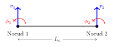
Degrés de liberté (ddl) :
On cherche le déplacement sous la forme \[v(x)=\bm N(x)\,\bm q_e,\qquad \bm q_e=\begin{bmatrix}v_1&\phi_1&v_2&\phi_2\end{bmatrix}^\top\]
Approximation \(v(x)=a_0+a_1x+a_2x^2+a_3x^3\) et conditions nodales :
\[v(0)=v_1,\quad v'(0)=\phi_1,\quad v(L_e)=v_2,\quad v'(L_e)=\phi_2\]
On obtient le système
\[ \begin{bmatrix} 1&0&0&0\\ 0&1&0&0\\ 1&L_e&L_e^2&L_e^3\\ 0&1&2L_e&3L_e^2 \end{bmatrix} \begin{pmatrix}a_0\\a_1\\a_2\\a_3\end{pmatrix}= \begin{pmatrix}v_1\\\phi_1\\v_2\\\phi_2\end{pmatrix} \]
En inversant ce système, \(v(x)=\bm N(x)\,\bm q_e\) avec les splines cubiques d’Hermite (\(\xi=x/L_e\)) :
\[ \begin{aligned} N_1&=1-3\xi^2+2\xi^3, & N_2&=L_e\,(\xi-2\xi^2+\xi^3),\\ N_3&=3\xi^2-2\xi^3, & N_4&=L_e\,(-\xi^2+\xi^3). \end{aligned} \]
Propriétés. \(N_1(0)=1\), \(N_3(L_e)=1\) ; \(N_2'(0)=1\), \(N_4'(L_e)=1\) ; toutes les autres valeurs et pentes nodales sont nulles. Les fonctions sont \(C^1\) aux nœuds : la rotation est continue.
On substitue \(v=\bm N\bm q_e\), \(\delta v=\bm N\,\delta\bm q_e\) dans la forme faible. Le lien courbure–ddl est
\[v''=\odvn{2}{\bm N}{x}\,\bm q_e=\bm B\,\bm q_e\]
et la variation d’énergie donne
\[\delta E_f=\delta\bm q_e^\top\bm K_e\,\bm q_e,\qquad \bm K_e:=\int_0^{L_e}EI\,\bm B^\top\bm B\,\d x\]
\[ \bm K_e=\frac{EI}{L_e^3} \begin{bmatrix} 12&6L_e&-12&6L_e\\ 6L_e&4L_e^2&-6L_e&2L_e^2\\ -12&-6L_e&12&-6L_e\\ 6L_e&2L_e^2&-6L_e&4L_e^2 \end{bmatrix} \]
Le noyau de \(\bm K_e\) est formé des mouvements rigides (translation et rotation) :
\[\ker\bm K_e=\operatorname{span}\left\{\begin{pmatrix}1\\0\\1\\0\end{pmatrix},\ \begin{pmatrix}0\\1\\L_e\\1\end{pmatrix}\right\}\]
Le déplacement horizontal utilise les fonctions chapeaux (\(\xi=x/L_e\)) : \[u=\begin{bmatrix}1-\xi&\xi\end{bmatrix}\begin{pmatrix}u_1\\u_2\end{pmatrix}\]
Avec l’énergie de traction \(E_t=\tfrac12\int_0^L EA\,(u')^2\,\d x\), on trouve
\[\delta E_t=\begin{pmatrix}\delta u_1&\delta u_2\end{pmatrix}\begin{bmatrix}\dfrac{EA}{L_e}&-\dfrac{EA}{L_e}\\[2mm]-\dfrac{EA}{L_e}&\dfrac{EA}{L_e}\end{bmatrix}\begin{pmatrix}u_1\\u_2\end{pmatrix}\]
\[ \bm K_e=\begin{bmatrix} \color{#c0392b}{\frac{EA}{L_e}}&0&0&\color{#c0392b}{-\frac{EA}{L_e}}&0&0\\ 0&\color{#2b7bb9}{\frac{12EI}{L_e^3}}&\color{#2b7bb9}{\frac{6EI}{L_e^2}}&0&\color{#2b7bb9}{-\frac{12EI}{L_e^3}}&\color{#2b7bb9}{\frac{6EI}{L_e^2}}\\ 0&\color{#2b7bb9}{\frac{6EI}{L_e^2}}&\color{#2b7bb9}{\frac{4EI}{L_e}}&0&\color{#2b7bb9}{-\frac{6EI}{L_e^2}}&\color{#2b7bb9}{\frac{2EI}{L_e}}\\ \color{#c0392b}{-\frac{EA}{L_e}}&0&0&\color{#c0392b}{\frac{EA}{L_e}}&0&0\\ 0&\color{#2b7bb9}{-\frac{12EI}{L_e^3}}&\color{#2b7bb9}{-\frac{6EI}{L_e^2}}&0&\color{#2b7bb9}{\frac{12EI}{L_e^3}}&\color{#2b7bb9}{-\frac{6EI}{L_e^2}}\\ 0&\color{#2b7bb9}{\frac{6EI}{L_e^2}}&\color{#2b7bb9}{\frac{2EI}{L_e}}&0&\color{#2b7bb9}{-\frac{6EI}{L_e^2}}&\color{#2b7bb9}{\frac{4EI}{L_e}} \end{bmatrix} \]
avec \(\bm q_e=\begin{pmatrix}u_1&v_1&\phi_1&u_2&v_2&\phi_2\end{pmatrix}^\top\).
Traction (rouge) et flexion (bleu) sont découplées : les deux blocs ne partagent aucun ddl.
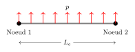
Le vecteur force est donné par le travail virtuel des forces extérieures : \[\delta W=\int_0^{L_e}\delta v\,p\,\d x=\delta\bm q_e^\top\int_0^{L_e}\bm N^\top p\,\d x=\delta\bm q_e^\top\bm f_e\]
Pour \(p\) constant : \[\bm f_e^{\text{rép.}}=p\int_0^{L_e}\bm N^\top\d x=\frac{p\,L_e}{2}\begin{pmatrix}1\\ L_e/6\\ 1\\ -L_e/6\end{pmatrix}\]
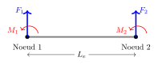
\[ \delta W=\underbrace{\begin{pmatrix}\delta v_1&\delta\phi_1&\delta v_2&\delta\phi_2\end{pmatrix}}_{\delta\bm q_e^\top}\begin{pmatrix}F_1\\M_1\\F_2\\M_2\end{pmatrix}, \qquad \bm f_e^{\text{nodal}}=\begin{pmatrix}F_1\\M_1\\F_2\\M_2\end{pmatrix} \]
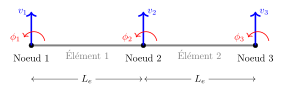
Les éléments ont les mêmes propriétés (\(E,\,I,\,S\)) et la même longueur \(L_e\) : on a donc la même matrice élémentaire.
Trois nœuds, deux ddl chacun : \[\bm q=\begin{pmatrix}v_1&\phi_1&v_2&\phi_2&v_3&\phi_3\end{pmatrix}^\top\]
\(\bm q_{e1}=(v_1,\phi_1,v_2,\phi_2)\) et \(\bm q_{e2}=(v_2,\phi_2,v_3,\phi_3)\) : le nœud 2 est partagé.
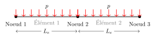
\[\bm f_e=-\frac{p\,L_e}{2}\begin{pmatrix}1&\frac{L_e}{6}&1&-\frac{L_e}{6}\end{pmatrix}^\top\quad\Longrightarrow\quad \bm f=\bm f_{e1}+\bm f_{e2}=-\frac{p\,L_e}{2}\begin{pmatrix}1\\ \frac{L_e}{6}\\ 2\\ 0\\ 1\\ -\frac{L_e}{6}\end{pmatrix}\]
Les forces des deux éléments se somment au nœud 2 ; les moments \(\pm pL_e^2/12\) s’y compensent.
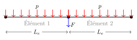
\[\bm f_{\text{nodale}}=-\begin{pmatrix}0\\0\\F\\0\\0\\0\end{pmatrix},\qquad \bm f=-\begin{pmatrix}\frac{pL_e}{2}\\ \frac{pL_e^2}{12}\\ pL_e+F\\ 0\\ \frac{pL_e}{2}\\ -\frac{pL_e^2}{12}\end{pmatrix}\]
Entrée : maillage
Sortie : matrice de rigidité globale K, vecteur de forces global f
K ← 0 ; f ← 0
pour chaque élément e :
Ke, fe ← rigidité élémentaire et forces réparties de e
récupérer la connectivité de e (tableau local → global)
pour chaque paire de ddl locaux (m, n) de e :
i ← local2global(m) ; j ← local2global(n)
K[i, j] += Ke[m, n]
f[i] += fe[m]
f ← f + f_nodale
retourner K, fLa matrice \(\bm K\) est creuse et à bande : un nœud ne « voit » que ses voisins. On ne stocke jamais la matrice pleine pour de grands maillages.
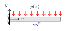
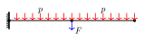
Sachant que \(v_1=0\) et \(\phi_1=0\), on résout \[\bm K\,\bm q=\bm f,\qquad\bm q=\begin{pmatrix}0&0&v_2&\phi_2&v_3&\phi_3\end{pmatrix}^\top\]
Si l’on ne bloque pas les mouvements rigides, \(\bm K\) n’est pas inversible (son noyau contient la translation et la rotation).
On sépare les ddl bloqués \(\bm q_b=(v_1,\phi_1)^\top\) et libres \(\bm q_l=(v_2,\phi_2,v_3,\phi_3)^\top\) :
\[ \begin{bmatrix}\bm K_{bb}&\bm K_{bl}\\\bm K_{lb}&\bm K_{ll}\end{bmatrix} \begin{pmatrix}\bm q_b\\\bm q_l\end{pmatrix}= \begin{pmatrix}\bm f_b+\bm r\\\bm f_l\end{pmatrix} \]
1. Déplacements. On résout d’abord pour \(\bm q_l\) : \[\bm q_l=\bm K_{ll}^{-1}\bigl(\bm f_l-\bm K_{lb}\bm q_b\bigr)=\bm K_{ll}^{-1}\bm f_l\qquad(\bm q_b=\bm 0)\]
2. Réactions. Puis on les retrouve par \[\bm r=\bm K_{bl}\,\bm q_l-\bm f_b\]
\(L=1\) m, \(EI=2\cdot10^5\) N·m². Réactions exactes (\(pL+F\), \(pL^2/2+Fa\)) quel que soit le maillage ; erreur en \(h^4\) pour \(p\) ; nulle pour une force nodale seule.
\(M=EI\,v_h''\) est linéaire dans chaque élément et discontinu aux nœuds : les flèches convergent en \(h^4\), mais les moments en \(h^2\).
Principe de d’Alembert : les forces d’inertie s’ajoutent au chargement,
\[EI\,\pdvn{4}{v}{x}=p+f_{\text{inertie}},\qquad f_{\text{inertie}}=-\rho S\,\pdvn{2}{v}{t}\]
La formulation faible s’obtient en ajoutant le travail des forces d’inertie :
\[ \underbrace{\int_0^L EI\,\delta v''\,v''\,\d x}_{\delta E_f}= \underbrace{-\int_0^L\rho S\,\delta v\,\ddot v\,\d x}_{\delta W_{\text{inertie}}} +\underbrace{\delta v\,\widehat T\Big|_{\Gamma_T}+\delta v'\,\widehat M\Big|_{\Gamma_M}+\int_0^L\delta v\,p\,\d x}_{\delta W_{\text{ext}}} \]
On substitue \(v=\bm N\,\bm q_e(t)\) et \(\delta v=\bm N\,\delta\bm q_e\) ; les ddl dépendent maintenant du temps :
\[\delta W_{\text{inertie}}=-\delta\bm q_e^\top\bm M_e\,\ddot{\bm q}_e,\qquad \bm M_e=\int_0^{L_e}\rho S\,\bm N^\top\bm N\,\d x\]
Matrice de masse élémentaire (cohérente) : \[ \bm M_e=\frac{\rho S L_e}{420} \begin{bmatrix} 156&22L_e&54&-13L_e\\ 22L_e&4L_e^2&13L_e&-3L_e^2\\ 54&13L_e&156&-22L_e\\ -13L_e&-3L_e^2&-22L_e&4L_e^2 \end{bmatrix} \]
L’assemblage de \(\bm M\) est identique à celui de \(\bm K\).
Système global sans forces : \[\bm M\ddot{\bm q}+\bm K\bm q=\bm 0\]
Après élimination des ddl bloqués \(\bm q_b=\bm 0\) : \[\bm M_{ll}\,\ddot{\bm q}_l+\bm K_{ll}\,\bm q_l=\bm 0\]
\(\bm M_{ll}\) est symétrique définie positive ; \(\bm K_{ll}\) l’est aussi une fois les mouvements rigides bloqués.
La décomposition modale est essentielle car les sollicitations extérieures ont souvent un contenu fréquentiel limité à une bande.
On cherche une solution harmonique \(\bm q(t)=\bm\phi\,e^{i\omega t}\) : \[(\bm K_{ll}-\omega^2\bm M_{ll})\,\bm\phi=\bm 0,\qquad \bm K_{ll},\bm M_{ll}\in\mathbb R^{n\times n}\]
Pour une fréquence propre multiple, plusieurs vecteurs propres indépendants \(\bm\phi_i\) correspondent à la même \(\omega_i\).
\(EI=2\cdot10^5\) N·m², \(\rho S=0{,}78\) kg/m, \(L=1\) m. Les fréquences EF sont supérieures aux exactes ; seule la première moitié du spectre est précise.
Orthogonalité. \(\bm M\) et \(\bm K\) sont symétriques, donc \[\bm\phi_i^\top\bm M\,\bm\phi_j=0,\qquad\bm\phi_i^\top\bm K\,\bm\phi_j=0\qquad(i\ne j)\]
Avec la normalisation \(\bm\Phi=[\bm\phi_1\ \dots\ \bm\phi_n]\) : \[\bm\Phi^\top\bm M\,\bm\Phi=\bm I,\qquad\bm\Phi^\top\bm K\,\bm\Phi=\bm\Omega^2=\operatorname{diag}(\omega_1^2,\dots,\omega_n^2)\]
Dans la base modale \(\bm q=\bm\Phi\,\bm\eta\), et après projection par \(\bm\Phi^\top\) : \[\ddot{\bm\eta}+\bm\Omega^2\bm\eta=\bm 0\]
Interprétation physique : les modes sont découplés, chacun est un oscillateur à un ddl.
Un mode est un espace invariant. Si la condition initiale est une combinaison linéaire de modes \[\bm q^0=\sum_{i\in I}\bm\phi_i\,\eta_i^0,\] la solution du problème dynamique reste décrite par les mêmes modes : \[\bm q(t)=\sum_{i\in I}\bm\phi_i\,\eta_i(t).\]
Avec \(c_1\) seul (\(\bm q^0=\bm\phi_1\)), la forme reste la même. Ajoutez \(c_2\) ou \(c_3\) : la forme évolue car \(\omega_2/\omega_1\approx6{,}3\).
Espace propre : \(E_i:=\{\bm\phi\neq\bm 0\ |\ \bm K\bm\phi=\omega_i^2\bm M\bm\phi\}\).
Si \(\bm q(0),\dot{\bm q}(0)\in E_i\), alors \(\bm q(t)\in E_i\) pour tout \(t\ge0\).
Preuve.
Les modes permettent de réduire la taille du problème \[\bm M\ddot{\bm q}+\bm K\bm q=\bm f\] quand la sollicitation \(\bm f\) a un contenu fréquentiel limité.
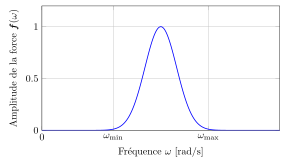
Spectre d’une sollicitation limitée à la bande \([\omega_{\min},\omega_{\max}]\)
On retient \(m<n\) modes pour approcher la solution : \[\bm q\approx\bm\Phi_{[m]}\,\bm\eta_{[m]},\qquad\bm\Phi_{[m]}=\begin{bmatrix}\bm\phi_1&\dots&\bm\phi_m\end{bmatrix},\quad\bm\eta_{[m]}=(\eta_1,\dots,\eta_m)^\top\]
NB : on n’est pas obligé de retenir les \(m\) premières fréquences : on garde les modes qui excitent la bande de la sollicitation.
On injecte dans la dynamique et on projette sur \(\bm\Phi_{[m]}\). Avec \(\bm K\bm\Phi_{[m]}=\bm M\bm\Phi_{[m]}\bm\Omega_{[m]}^2\) :
\[\ddot{\bm\eta}_{[m]}+\bm\Omega_{[m]}^2\,\bm\eta_{[m]}=\bm\Phi_{[m]}^\top\bm f\]
Système découplé de taille réduite : \(m\) oscillateurs indépendants au lieu de \(n\) équations couplées.
Force et réponse en bout (40 ddl, \(\zeta=0{,}5\,\%\)). Courbe sombre : modèle complet ; verte : base réduite. Il faut garder tous les modes qui résonnent dans la bande orange.
Statique. Euler–Bernoulli \(\Rightarrow\) \(EI\,v''''=p\) ; forme faible \(\delta E_f=\delta W_f\) ; conditions essentielles (cinématiques) imposées dans l’espace, naturelles (efforts) dans la forme faible.
Élément fini. Interpolation d’Hermite (\(C^1\)), \(\bm K_e=\int EI\,\bm B^\top\bm B\,\d x\), \(\bm M_e=\int\rho S\,\bm N^\top\bm N\,\d x\) ; assemblage par sommation aux nœuds partagés ; sans conditions aux limites \(\bm K\) est singulière.
Dynamique. \(\bm M\ddot{\bm q}+\bm K\bm q=\bm f\) ; modes propres orthogonaux \(\Rightarrow\) oscillateurs découplés, sous-espaces invariants ; réduction modale sur la bande de la sollicitation.
Le laboratoire interactif reprend toutes les simulations de ces transparents en pleine page, et les notes de cours détaillent les calculs.
Éléments finis pour la flexion des poutres · A. Brugnoli · ISAE-SUPAERO